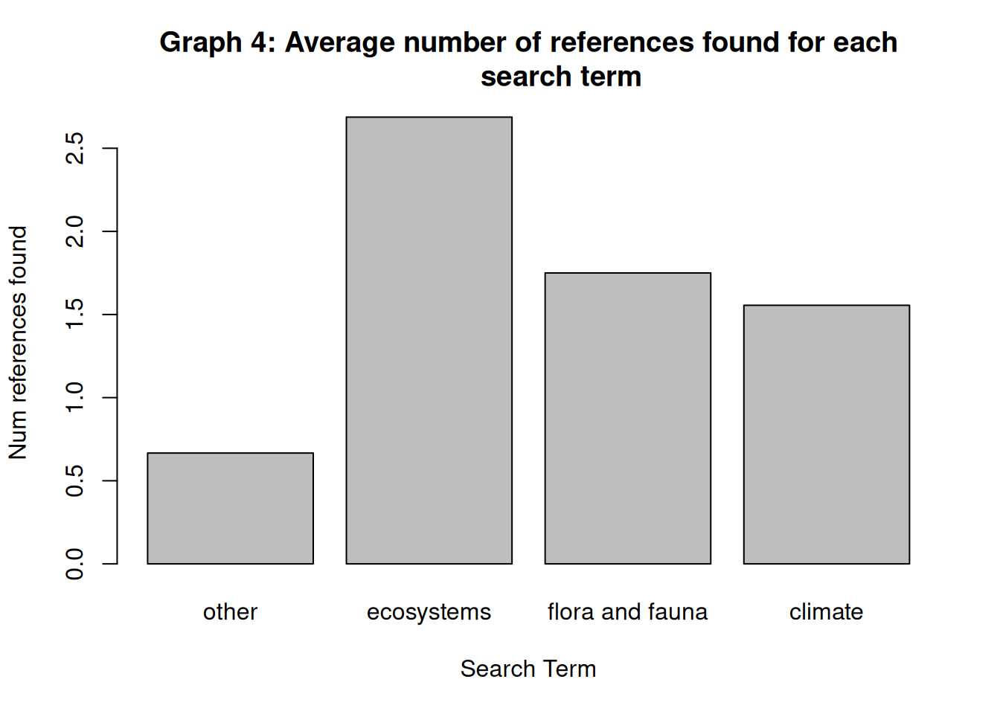

mountain_classification <- read_csv("tables/mountain classification summary.csv", show_col_types = FALSE)
datatable(mountain_classification,
caption = 'Table 1: Categorised relevant information presence for each mountain range researched',
options = list(pageLength = 15, autoWidth = TRUE))Tropical Alpine Herbland and Grassland Occurrence and Viability
Abstract
In this paper, a subspace of relevant mountain ranges were analysed to find the occurrence of tropical alpine grasslands and herblands (The ecosystem labelled T6.5 from the global ecosystem typology). Most ranges were not confirmed to have the T6.5 ecosystem present, but did have information regarding the characteristics possessed by T6.5 ecosystems, including vegetation, soil and climate characteristics. Many of the areas studied showed evidence of human transformation, meaning it is unknown whether they could have a T6.5 ecosystem present. Additionally, the majority of ranges show the presence of other ecosystems within the typology, not necessarily meaning there is not also an area of the range where T6.5 may be found.
Introduction
- model already exixts
- shows for each grid reference of 30x30m resolution what the probability is that each ecosystem within the typology will exist
- checking the areas most likely to have T6.5 present based on the model to find observations of whether T6.5 is present or if it has been transformed.
Methods
- A google search was made for context and general papers with accessory info
- Google scholar searches were made for: ‘[mountain name] Ecosystems’ ‘[mountain name] flora and fauna’ ‘[mountain name] climate’
For example: ‘High Atlas mountains’ ‘Western High Atlas Ecosystems’ ‘Western High Atlas flora and fauna’ ‘Western High Atlas climate’
The information present for the range was added to the table: ‘mountain classification summary’, separating into categories
Each reference was added to the table: ‘references-per-mountain’, specifying the region, range, and search term used to find the source
Time spent by activity
Project setup: 5 hours Finding context and information: 20 hours Finding relevant references: 70 hours Summarising information present for each range by category: 8 hours Summarising references found into a table sorted by region, range and search term: 8 hours Composing project report: 15 hours
Results
This opening table shows the categorised information found for each mountain range, clarifying whether relevant information was found showing either the targeted or other ecosystems, as well as some characteristics of the given ecosystem (vegetation, soil and climate). Also included is information present on transformation, as ecosystem transformation is a regular occurrence, improving search efficiency.
The number of ranges found per region is shown below
mountain_classification %>%
group_by(Region) %>%
summarise(`Nr of ranges` = n_distinct(Range)) %>%
datatable(caption = 'Table 2: Number of ranges found per region',
options = list(dom = "t"))The information from table 1 has been synthesised below to show the presence of information relating each main ecosystem characteristic for each region.
info_perc <- mountain_classification %>%
group_by(Region) %>%
summarise(`Nr of ranges` = n_distinct(Range),
`Veg info` = sum(if_else(`Info on vegetation` == "Y",1,0)),
veg_perc = `Veg info`/`Nr of ranges`,
`soil info` = sum(if_else(`Info on soil` == "Y",1,0)),
soil_perc = `soil info`/`Nr of ranges`,
`clim info` = sum(if_else(`Info on climate` == "Y",1,0)),
clim_perc = `clim info`/`Nr of ranges`,)
barplot(height=as.matrix(info_perc[,c(4,6,8)]),
main="Graph 1: Percentage of ranges with information on
each key ecosystem characteristic",
ylab= "% available",
beside=TRUE,
col=rainbow(5))
legend(9,1.0, c("Central Plateau (Southern Africa)",
"Eastern Arc Mountains",
"Maghreb Mountains",
"Plateau of Mozambique",
"Sahara Ranges"),
cex=0.6,
bty="n",
fill=rainbow(5));The graph below shows the same information as graph 1, however is formatted to highlight the differences in the number of ranges with information on each characteristic
info_perc <- mountain_classification %>%
group_by(Region) %>%
summarise(`Nr of ranges` = n_distinct(Range),
`Veg info` = sum(if_else(`Info on vegetation` == "Y",1,0)),
veg_perc = `Veg info`/`Nr of ranges`,
`soil info` = sum(if_else(`Info on soil` == "Y",1,0)),
soil_perc = `soil info`/`Nr of ranges`,
`clim info` = sum(if_else(`Info on climate` == "Y",1,0)),
clim_perc = `clim info`/`Nr of ranges`,)
barplot(height=as.matrix(info_perc[,c(3,5,7)]),
main="Graph 2: Number of ranges with information on
each key ecosystem characteristic",
ylab= "Num found",
beside=FALSE,
col=rainbow(5))
legend(1.3333,29.0, c("Central Plateau (Southern Africa)",
"Eastern Arc Mountains",
"Maghreb Mountains",
"Plateau of Mozambique",
"Sahara Ranges"),
cex=0.6,
bty="n",
fill=rainbow(5));We can populate another table with the list of references and we can do similar summaries of nr of references per mountain range:
mountain_references <- read_csv("tables/references-per-mountain.csv", show_col_types = FALSE)
datatable(mountain_references, caption = 'Table 3: Full list of references')Summarise the number of references per region
mountain_references %>%
group_by(Region) %>%
summarise(`Num references` = n_distinct(comment)) %>%
datatable(caption = 'Table 4: Number of references per region')Chart of the average number of references found per range for each region
reference_density <- mountain_references %>%
group_by(Region) %>%
summarise(`Num ranges` = n_distinct(Range),
`Num references` = n_distinct(comment),
reference_density = `Num references`/`Num ranges`)
barplot(reference_density$reference_density,
main="Graph 3: Average number of references per range for
each region",
xlab="Region",
ylab="Average references per range",
names.arg=reference_density$Region)Chart of average number of references per given search term
search_reference_density <- mountain_references %>%
mutate(climate_term = grepl("climate",search_string),
ff_term = grepl("flora and fauna",search_string),
ecosystem_term = grepl("ecosystems",search_string)) %>%
group_by(climate_term, ff_term, ecosystem_term) %>%
summarise(`Num references` = n_distinct(comment),
`Num search` = n_distinct(Range),
search_reference_density = `Num references`/`Num search`)
barplot(search_reference_density$search_reference_density,
main="Graph 4: Average number of references found for each
search term",
xlab="search term",
ylab="Num references found",
names.arg=c("none","eco","ff","clim"))
Progression and learnings through the project
The start of the term was spent setting up software and learning how to search
At the beginning, significant context was found and explored for each reference, added to the reference document, with understanding prioritised. Each reference took roughly 1 hour to explore fully and gather valuable knowledge from
Initially BASE, JSTOR, google scholar and CORE were used with various search terms, eventually resulting in the finding that the use of 3 search terms: “[Mountain range] Ecosystems”, “[Mountain range] flora and fauna”, and “[Mountain range] climate” in google scholar only was the most efficient and effective choice within the time constraints of the project.
This process became progressively efficient and clearer as search terms became familiar, recognising article value become clearer and the decision to separate steps into finding valuable sources and then later filtering those sources to find information within
standardising search terms and finding which were most valuable was very helpful
standardising format of documents with references found allowed for far more efficient use later in the project
By the end of the project sources each took about 20 minutes to confirm on average, but this was slowly reduced as the clarity for what to look for improved and familiarity improved
adding a document to summarise findings into a table was incredibly valuable (the categories to search for made deciding on article value far more efficient)
A file to include all references in a table allowed for more effective searches as well
Putting together results into a final report, including analysis and summary allowed findings to be clearly shown.
Cleaning all previous files to standardise all results shown and references found
Setting up bibliography with all references in bibtex format, most references were added using the biblio creator, however those without easily accessible dois were added with a web reference maker.
References
2013. Rough Guides.
———. 2019. Flora Mediterranea 29. https://doi.org/10.7320/flmedit29.207.
———. 2021. Wikipedia. Wikimedia Foundation. https://en.wikipedia.org/wiki/Belezma_Range.
———. 2023a. Wikipedia. Wikimedia Foundation. https://en.wikipedia.org/wiki/Anti-Atlas.
———. 2023b. Wikipedia. Wikimedia Foundation. https://en.wikipedia.org/wiki/Jbel_Saghro.
———. 2023c. Wikipedia. Wikimedia Foundation. https://en.wikipedia.org/wiki/Djurdjura.
———. 2023d. Wikipedia. Wikimedia Foundation. https://en.wikipedia.org/wiki/Ksour_Range.
———. 2023e. Wikipedia. Wikimedia Foundation. https://en.wikipedia.org/wiki/Aur%C3%A8s_Mountains.
———. n.d.c. Soil Genesis, Classification, and Nitrogen Cycling in Forest Ecosystems ... https://www.semanticscholar.org/paper/Soil-genesis%2C-classification%2C-and-nitrogen-cycling-Jelloun/f29d9fac09a91bc5db6bdac6fc94bc76f75f81fe/figure/50.
———. n.d.a. NASA. NASA. https://earthobservatory.nasa.gov/images/2178/anti-atlas-mountains-morocco.
———. n.d.b. Studylibfr.com. https://studylibfr.com/doc/4225179/le-cypr%C3%A8s-du-tassili---caract%C3%A9risation-floristique-et-%C3%A9co...
Abdoun, Fatiha, and Mohamed Beddiaf. n.d. “Cupressus Dupreziana a. Camus : Répartition, Dépérissement Et Régénération Au Tassili n’ajjer, Sahara Central.” Comptes Rendus Biologies 325 (5): 617–27. https://doi.org/10.1016/s1631-0691(02)01433-6.
Abel-Schaad, Daniel, Eneko Iriarte, Jos’e Antonio L’opez-S’aez, Sebasti’an P’erez-D’ıaz, Silvia Sabariego Ruiz, Rachid Cheddadi, and Francisca Alba-S’anchez. n.d. “Are <i>cedrus Atlantica</i> Forests in the Rif Mountains of Morocco Heading Towards Local Extinction?” The Holocene 28 (6): 1023–37. https://doi.org/10.1177/0959683617752842.
Ademola, Olaoluwa John. 1970. “Ecology of Rodent Species in the Ukaguru Mountains Within the Eastern Arc Mountains, Tanzania.” SUA IR Home. Sokoine University of Agriculture. https://www.suaire.sua.ac.tz/handle/123456789/3912.
Ademola, Olaoluwa John, Apia W. Massawe, Loth S. Mulungu, Proches Hieronimo, Fortunatus B. S. Makonda, and Rhodes H. Makundi. n.d. “Habitat Type Impacts Small Mammal Diversity in the Ukaguru Mountains, Tanzania.” Mammalia 86 (2): 123–33. https://doi.org/10.1515/mammalia-2020-0158.
ALAMI, Abderrazak EL. 2022. “Biodiversity Loss in the Moroccan Central High Atlas, Its Impact on Local Ecosystems and National Economy, and Wildlife Conservation Strategy: Findings from 20 Years of Research.” Journal of Analytical Sciences and Applied Biotechnology 4 (2): 4–2), 2022, pp. 81–96. https://doi.org/10.48402/IMIST.PRSM/jasab-v4i2.35045.
Amrani, Samira. 2018. “The Holocene Flora and Vegetation of Ti-n Hanakaten (Tassili n’ajjer, Algerian Sahara).” In Plants and People in the African Past: Progress in African Archaeobotany, edited by Anna Maria Mercuri, A. Catherine D’Andrea, Rita Fornaciari, and Alexa Höhn, 123–45. Cham: Springer International Publishing. https://doi.org/10.1007/978-3-319-89839-1_8.
Arar, Abdelkrim, Slimane Tabet, Yacine Nouidjem, Rabah Bounar, and Haroun Chenchouni. 2019. “Projected Small-Scale Range Reductions of Cedrus Atlantica Forests Due to Climate Change at the Belezma National Park (Algeria).” In Exploring the Nexus of Geoecology, Geography, Geoarcheology and Geotourism: Advances and Applications for Sustainable Development in Environmental Sciences and Agroforestry Research, edited by Haroun Chenchouni, Ezzoura Errami, Fernando Rocha, and Luisa Sabato, 15–19. Cham: Springer International Publishing.
Bacha, M. E., B. Nedjimi, A. Ararem, and B. Beladel. n.d. “Seasonal Variation of Selected Trace Elements in Rare Endemic Species Thuriferous Juniper Growing in the Aurès Mountains of Algeria.” Journal of Forestry Research 28 (2): 249–54. https://doi.org/10.1007/s11676-016-0320-4.
Baer, Sara G., Elizabeth M. Bach, Clinton K. Meyer, Chris C. Du Preez, and Johan Six. n.d. “Belowground Ecosystem Recovery During Grassland Restoration: South African Highveld Compared to US Tallgrass Prairie.” Ecosystems 18 (3): 390–403. https://doi.org/10.1007/s10021-014-9833-x.
Balashov, Nikolay V., Anne M. Thompson, Stuart J. Piketh, and Kristy E. Langerman. n.d. “Surface Ozone Variability and Trends over the South African Highveld from 1990 to 2007.” Journal of Geophysical Research: Atmospheres 119 (7): 4323–42. https://doi.org/10.1002/2013jd020555.
Baldur, and Gabriel. 2017. “Exploration of the Tibesti Mountains– Re-Appraisal After 50 Years?” The African Neogene – Climate, Environments and People, 9–29. https://doi.org/10.1201/9781315161808-2.
Barakat, N. A. M., A. M. A. El-Gawad, V. Laudadio, H. F. Kabiel, V. Tufarelli, and E. Cazzato. 2014. “A Contribution to the Ecology and Floristic Markers of Plant Associations in Different Habitats of Sinai Peninsula, Egypt.” Rendiconti Lincei 25 (4): 479–90. https://doi.org/10.1007/s12210-014-0329-6.
Barbachea, Amina, Yassine Beghami, and Hassen Benmessaoudc. 2018. “Study and Diachronic Analysis of Forest Cover Changes of Belezma-Algeria.” Geographica Pannonica 22 (4): 253–63. https://doi.org/10.5937/gp22-18806.
Barrow, C. J, and H Hicham. 2000. “Two Complimentary and Integrated Land Uses of the Western High Atlas Mountains, Morocco: The Potential for Sustainable Rural Livelihoods.” Applied Geography 20 (4): 369–94. https://doi.org/10.1016/s0143-6228(00)00010-2.
Batanouny, K. H. [كمال الدين حسن البتانوني]. 1985. “Botanical Exploration of Sinai.” Qatar University Digital Hub. Qatar University. https://qspace.qu.edu.qa/handle/10576/9678.
Bencherifa, Abdellatif. n.d. “Land Use and Equilibrium of Mountain Ecosystems in the High Atlas of Western Morocco.” Mountain Research and Development 3 (3): 273. https://doi.org/10.2307/3673021.
Benmouffok, Aomar. 1995. “Description de Formations à "Cedrus Atlantica" Manetti Du Massif Central Du Djurdjura (Algérie).” Cahiers Agricultures 4 (5): 383–387 (1). https://revues.cirad.fr/index.php/cahiers-agricultures/article/view/29913.
Bensid, Z., T. Halitat, M. Sbih, and H. Messaadia. n.d. “Status of Soil Organic Matter of Cedar Stands in Forest Mountains of Belezma (Aures, Algeria).” Research Journal of Forestry 9 (1): 6–21. https://doi.org/10.3923/rjf.2015.6.21.
Benyahia, Yousra, Fabien Soldati, Latifa Rohi, Lionel Valladares, Noureddin Maatouf, Olivier Courtin, Salwa El Antry, and Herv’e Brustel. 2015. “First Survey of Darkling Beetles (Coleoptera, Tenebrionidae) of Talassemtane National Park, Western Rif, Morocco.” Check List 11 (5): 1778. https://doi.org/10.15560/11.5.1778.
Benyoucef, Madani, Kaddour Mebarki, Bruno Ferr’e, Mohammed Adaci, Luc Georges Bulot, Delphine Desmares, Loı̈c Villier, et al. 2017. “Litho- and Biostratigraphy, Facies Patterns and Depositional Sequences of the Cenomanian-Turonian Deposits in the Ksour Mountains (Saharan Atlas, Algeria).” Cretaceous Research 78 (October): 34–55. https://doi.org/10.1016/j.cretres.2017.05.013.
Benzina, Im‘ene, and and Abdelkrim Si Bachir and. n.d. “DIVERSITY OF BENTHIC MACROINVERTEBRATES AND STREAMS QUALITY IN THE NATIONAL PARK OF BELEZMA (NORTHERN-EAST, ALGERIA).” LIFE: International Journal of Health and Life-Sciences 4 (1): 01–18. https://doi.org/10.20319/lijhls.2018.41.0118.
Bloem, K. J., G. K. Theron, and N. van Rooyen. 1993. “Wetland Plant Communities of the Verlorenvalei Nature Reserve in the North-Eastern Sandy Highveld, Transvaal.” South African Journal of Botany 59 (3): 281–86. https://doi.org/10.1016/s0254-6299(16)30729-3.
Bouarfa, Said, Abdessamed Derdour, Youb Okkacha, Abdulrazak H. Almaliki, Antonio Jodar-Abellan, and Enas E. Hussein. n.d. “Aeolian Sand Deposit Assessment in an Arid Area, Case Study: The Region of Ksour Mountains (SW of Algeria).” https://doi.org/10.21203/rs.3.rs-1234507/v1.
Burgess, N. D., T. M. Butynski, N. J. Cordeiro, N. H. Doggart, J. Fjeldså, K. M. Howell, F. B. Kilahama, et al. n.d. “The Biological Importance of the Eastern Arc Mountains of Tanzania and Kenya.” Biological Conservation 134 (2): 209–31. https://doi.org/10.1016/j.biocon.2006.08.015.
Burgess, N. D., J. Fjeldså, and R. Botterweg. n.d. “Faunal Importance of the Eastern Arc Mountains of Kenya and Tanzania.” Journal of East African Natural History 87 (1): 37–58. https://doi.org/10.2982/0012-8317(1998)87[37:fiotea]2.0.co;2.
Burgess, Neil, Nike Doggart, and Jon C. Lovett. n.d. “The Uluguru Mountains of Eastern Tanzania: The Effect of Forest Loss on Biodiversity.” Oryx 36 (2): 140–52. https://doi.org/10.1017/s0030605302000212.
Burke, A. 2017. “Biodiversity Zoning in the Greater Fish River Canyon Landscape in Southern Namibia.” Namibian Journal of Environment 1: Section A, 60–71. https://nje.org.na/index.php/nje/article/view/volume1-burke.
Burke, Antje. n.d. “Properties of Soil Pockets on Arid Nama Karoo Inselbergs–the Effect of Geology and Derived Landforms.” Journal of Arid Environments 50 (2): 219–34. https://doi.org/10.1006/jare.2001.0907.
Cheddadi, Rachid, Ouafaa Bouaissa, Ali Rhoujjati, and Laurent Dezileau. 2016. “Changements Environnementaux Dans Les Montagnes de l’ouest Du Rif Marocain Depuis 9 000 ans.” Quaternaire, no. vol. 27/1: 15–25. https://doi.org/10.4000/quaternaire.7517.
Clark, Barnaby, and Petri Pellikka. 2007. “Mapping Land Cover Change in the Taita Hills, Kenya, Utilizing Multi-Scale Segmentation and Object-Oriented Classification of Spot Imagery.” 2007 IEEE International Geoscience and Remote Sensing Symposium. https://doi.org/10.1109/igarss.2007.4423201.
Constant, Natasha Louise, and Sandra Bell. n.d. “Governance, Participation and Local Perceptions of Protected Areas: Unwinding Traumatic Nature in the Blouberg Mountain Range.” Environmental Values 26 (5): 539–59. https://doi.org/10.3197/096327117x15002190708100.
Conte, C. A. 1999. “The Forest Becomes Desert: Forest Use and Environmental Change in Tanzania’s West Usambara Mountains.” Land Degradation &Amp;amp; Development 10 (4): 291–309. https://doi.org/10.1002/(sici)1099-145x(199907/08)10:4&lt;291::aid-ldr363&gt;3.0.co;2-w.
Couvreur, Thomas L. P., Gilles Dauby, Anne Blach?Overgaard, Vincent Deblauwe, Steven Dessein, Vincent Droissart, Oliver J. Hardy, et al. n.d. “Tectonics, Climate and the Diversification of the Tropical African Terrestrial Flora and Fauna.” Biological Reviews 96 (1): 16–51. https://doi.org/10.1111/brv.12644.
Dadamouny, Mohamed A., and Martin Schnittler. n.d. “Trends of Climate with Rapid Change in Sinai, Egypt.” Journal of Water and Climate Change 7 (2): 393–414. https://doi.org/10.2166/wcc.2015.215.
Daemane, Mahlomola E., Sarel S. Cilliers, and Hugo Bezuidenhout. 2010. “An Ecological Study of the Plant Communities in the Proposed Highveld National Park, in the Peri-Urban Area of Potchefstroom, South Africa.” Koedoe 52 (1). https://doi.org/10.4102/koedoe.v52i1.708.
Daemane, Mahlomola Ernest. 1970. “An Ecological Study of the Plant Communities and Degraded Areas of the Highveld National Park, North West Province, South Africa.” NWU. North-West University. https://repository.nwu.ac.za/handle/10394/725.
Derdour, Abdessamed, Abderrazak Bouanani, and Kamila Babahamed. n.d. “Modelling Rainfall Runoff Relations Using HEC-HMS in a Semi-Arid Region: Case Study in Ain Sefra Watershed, Ksour Mountains (SW Algeria).” Journal of Water and Land Development 36 (1): 45–55. https://doi.org/10.2478/jwld-2018-0005.
Dey, Lara?Sophie, Axel Hochkirch, Abdelhamid Moussi, Marianna V. P. Simões, and Martin Husemann. n.d. “Diversification in and Around the Atlas Mountains: Insights into the Systematics and Biogeography of the Genus <i>thalpomena</i> (Orthoptera: Acrididae: Oedipodinae).” Systematic Entomology 47 (3): 402–19. https://doi.org/10.1111/syen.12537.
Doggart, Nike, Andrew Perkin, Jacob Kiure, Jon Fjeldså, John Poynton, and Neil Burgess. n.d. “Changing Places: How the Results of New Field Work in the Rubeho Mountains Influence Conservation Priorities in the Eastern Arc Mountains of Tanzania.” African Journal of Ecology 44 (2): 134–44. https://doi.org/10.1111/j.1365-2028.2006.00572.x.
Dowsett-Lemaire, F. 1985. “The Forest Vegetation of the Nyika Plateau (Malawi-Zambia): Ecological and Phenological Studies.” Bulletin Du Jardin Botanique National de Belgique / Bulletin van de National Plantentuin van België 55 (3/4): 301. https://doi.org/10.2307/3667960.
———. n.d. “The Forest Vegetation of Mt Mulanje (Malawi): A Floristic and Chorological Study Along an Altitudinal Gradient (650-1950 m).” Bulletin Du Jardin Botanique National de Belgique / Bulletin van de National Plantentuin van België 58 (1/2): 77. https://doi.org/10.2307/3668402.
Drouai, Hakim, Mohammed Belhamra, and Fateh Mimeche. 2018. “Inventory and Distribution of the Rodents in Aurès Mountains and Ziban Oasis (Northeast of Algeria).” Anales de Biología, no. 40 (December): 47–55. https://doi.org/10.6018/analesbio.40.06.
Ehardt, Carolyn L., Trevor P. Jones, and Thomas M. Butynski. n.d. “Protective Status, Ecology and Strategies for Improving Conservation of Cercocebus Sanjei in the Udzungwa Mountains, Tanzania.” International Journal of Primatology 26 (3): 557–83. https://doi.org/10.1007/s10764-005-4366-y.
El-Ghani, Monier M.Abd, and Wafaa M Amer. 2003. “Soil–Vegetation Relationships in a Coastal Desert Plain of Southern Sinai, Egypt.” Journal of Arid Environments 55 (4): 607–28. https://doi.org/10.1016/s0140-1963(02)00318-x.
Emmel, C., P. Knippertz, and O. Schulz. n.d. “Climatology of Convective Density Currents in the Southern Foothills of the Atlas Mountains.” Journal of Geophysical Research: Atmospheres 115 (D11). https://doi.org/10.1029/2009jd012863.
Finch, Jemma, Melanie J. Leng, and Rob Marchant. n.d. “Late Quaternary Vegetation Dynamics in a Biodiversity Hotspot, the Uluguru Mountains of Tanzania.” Quaternary Research 72 (1): 111–22. https://doi.org/10.1016/j.yqres.2009.02.005.
Finch, Jemma, Rob Marchant, and Colin J Courtney Mustaphi. n.d. “Ecosystem Change in the South Pare Mountain Bloc, Eastern Arc Mountains of Tanzania.” The Holocene 27 (6): 796–810. https://doi.org/10.1177/0959683616675937.
Guiot, Joël, and Wolfgang Cramer. 2016. “Conclusion. The Mediterranean Basin, Climate Change and Our Common Future.” The Mediterranean Region Under Climate Change, 661–64. https://doi.org/10.4000/books.irdeditions.24063.
Hahn, N. 2017. “Endemic Flora of the Soutpansberg, Blouberg and Makgabeng.” South African Journal of Botany 113 (November): 324–36. https://doi.org/10.1016/j.sajb.2017.09.006.
Hahn, Norbert. 2011. “Refinement of the Soutpansberg Geomorphic Province, Limpopo, South Africa.” Transactions of the Royal Society of South Africa 66 (1): 32–40. https://doi.org/10.10520/EJC92007.
Hall, Jaclyn, Neil D. Burgess, Jon Lovett, Boniface Mbilinyi, and Roy E. Gereau. 2009. “Conservation Implications of Deforestation Across an Elevational Gradient in the Eastern Arc Mountains, Tanzania.” Biological Conservation 142 (11): 2510–21. https://doi.org/10.1016/j.biocon.2009.05.028.
Happold, D. C. D., and M. Happold. n.d. “Small Mammals in Pine Plantations and Natural Habitats on Zomba Plateau, Malawi.” The Journal of Applied Ecology 24 (2): 353. https://doi.org/10.2307/2403880.
Heckmann, Matthias. 2012. “Soil Erosion History and Past Human Land Use in the North Pare Mountains: A Geoarchaeological Study of Slope Deposits in Northeastern Tanzania.” Azania: Archaeological Research in Africa 47 (3): 407–7. https://doi.org/10.1080/0067270x.2012.707484.
———. n.d. “Farmers, Smelters and Caravans: Two Thousand Years of Land Use and Soil Erosion in North Pare, NE Tanzania.” CATENA 113 (list(2014, 2)): 187–201. https://doi.org/10.1016/j.catena.2013.07.010.
Heckmann, Matthias, Veronica Muiruri, Arnoud Boom, and Rob Marchant. n.d. “Human–Environment Interactions in an Agricultural Landscape: A 1400-Yr Sediment and Pollen Record from North Pare, NE Tanzania.” Palaeogeography, Palaeoclimatology, Palaeoecology 406 (7): 49–61. https://doi.org/10.1016/j.palaeo.2014.04.005.
Hohenthal, Johanna, Emmah Owidi, Paola Minoia, and Petri Pellikka. n.d. “Local Assessment of Changes in Water-Related Ecosystem Services and Their Management: DPASER Conceptual Model and Its Application in Taita Hills, Kenya.” International Journal of Biodiversity Science, Ecosystem Services &Amp; Management 11 (3): 225–38. https://doi.org/10.1080/21513732.2014.985256.
Hou’erou, H. N. Le. n.d. “Outline of the Biological History of the Sahara.” Journal of Arid Environments 22 (1): 3–30. https://doi.org/10.1016/s0140-1963(18)30653-0.
Imen, Tahar. 2017. “(PDF) Study of the Climate Changes Impact on the Spatio- Temporal ...” Analele UniversităţiidinOradea,SeriaGeografie. https://www.researchgate.net/publication/362751337_STUDY_OF_THE_CLIMATE_CHANGES_IMPACT_ON_THE_SPATIO-_TEMPORAL_VARIABILITY_OF_PRECIPITATION_IN_THE_EASTERN_PART_OF_THE_SAHARAN_ATLAS_CASE_OF_THE_BELEZMA_THE_AURES_AND_NEMEMCHA_AND_THEIR_BORDERS_GEOMATICS.
Kettani, Kawtar, and Joel Moubayed-Breil. n.d. “Communities of Chironomidae (Diptera) from Four Ecological Zones Delimited by the Mediterranean Coastal Ecosystems of Morocco (Moroccan Rif). Updated List and Faunal Data from the Last Two Decades.” Journal of Limnology. https://doi.org/10.4081/jlimnol.2018.1727.
Kherchouche, Dalila, Said Slimani, Ramzi Touchan, Djazia Touati, Hamana Malki, and Christopher H. Baisan. n.d. “Fire Human-Climate Interaction in Atlas Cedar Forests of Aurès, Northern Algeria.” Dendrochronologia 55: 125–34. https://doi.org/10.1016/j.dendro.2019.04.005.
Klaus, Dieter, and Peter Frankenberg. 1979. “Statistical Relationships Between Floristic Composition and Mean Climatic Conditions in the Sahara.” Journal of Biogeography 6 (4): 391. https://doi.org/10.2307/3038091.
Lamb, H. F., U. Eicher, and V. R. Switsur. n.d. “An 18,000-Year Record of Vegetation, Lake-Level and Climatic Change from Tigalmamine, Middle Atlas, Morocco.” Journal of Biogeography 16 (1): 65. https://doi.org/10.2307/2845311.
Laswai, Francis Faustine. 2011. “Carbon Storage Potential of Grassland Ecosystems in the Eastern Arc Mountains: A Case Study of Udzungwa Mountains, Tanzania.” TaCCIRe Home. Sokoine University of Agriculture. http://www.taccire.sua.ac.tz/handle/123456789/280.
LAWSON, LUCINDA P. n.d. “The Discordance of Diversification: Evolution in the Tropical‐montane Frogs of the Eastern Arc Mountains of Tanzania.” Molecular Ecology 19 (18): 4046–60. https://doi.org/10.1111/j.1365-294x.2010.04788.x.
Lawson, Lucinda, and David Moyer. 2008. “Within and Between‐site Distribution of Frog Species on the Udzungwa Plateau, Tanzania.” African Journal of Herpetology 57 (2): 93–102. https://doi.org/10.1080/21564574.2008.9635572.
Le Hou’erou, Henry N. 1997. “Climate, Flora and Fauna Changes in the Sahara over the Past 500 Million Years.” Journal of Arid Environments 37 (4): 619–47. https://doi.org/10.1006/jare.1997.0315.
Lefèvre-Witier, Philippe. 1982. “Ecology and Biological Structure of Pastoral Isseqqamaren Tuareg.” Current Developments in Anthropological Genetics, 93–124. https://doi.org/10.1007/978-1-4615-6769-1_4.
Levinson, H. Z., and A. R. Levinson. n.d. “Botanical and Chemical Aspects of the Olive Tree with Regards to Fruit Acceptance by <i>dacus Oleae</i> (Gmelin) and Other Frugivorous Animals.” Zeitschrift Für Angewandte Entomologie 98 (1-5): 136–49. https://doi.org/10.1111/j.1439-0418.1984.tb02694.x.
Linares, Juan, Lahcen Taiqui, and Jesús Camarero. 2011. “Increasing Drought Sensitivity and Decline of Atlas Cedar (Cedrus Atlantica) in the Moroccan Middle Atlas Forests.” Forests 2 (December): 777–96. https://doi.org/10.3390/f2030777.
Livingstone, D. A. 1975. “Late Quaternary Climatic Change in Africa.” Annual Review of Ecology and Systematics 6 (1): 249–80. https://doi.org/10.1146/annurev.es.06.110175.001341.
Lobe, I., W. Amelung, and C. C. Du Preez. n.d. “Losses of Carbon and Nitrogen with Prolonged Arable Cropping from Sandy Soils of the South African Highveld.” European Journal of Soil Science 52 (1): 93–101. https://doi.org/10.1046/j.1365-2389.2001.t01-1-00362.x.
Lovett, Jon C. n.d. “Elevational and Latitudinal Changes in Tree Associations and Diversity in the Eastern Arc Mountains of Tanzania.” Journal of Tropical Ecology 12 (5): 629–50. https://doi.org/10.1017/s0266467400009846.
M., N. E., and Louis Gentil. n.d. “Physical Geography of Morocco.” The Geographical Journal 29 (4): 447. https://doi.org/10.2307/1776756.
Mabrouki, Youness, Andrei Terec, Fouzi Taybi, Anna D’enes, and Lujza Keresztes. n.d. “Taxonomic Notes and Key to the West Palearctic Antocha (Antocha) Osten Sacken, 1860 (Diptera, Limoniidae) with Description of a New Species from Morocco.” Biodiversity Data Journal 11. https://doi.org/10.3897/bdj.11.e103849.
MacFadyen, Duncan Neil. 2014. “The Dynamics of Small Mammal Populations in Rocky Highveld Grassland, Telperion, South Africa.” Handle Proxy. University of Pretoria. http://hdl.handle.net/2263/79273.
Malki, Hamana, Houda Bezzih, and Abdeljalil Aissi. n.d. “Characterising of Plant Cover Evolution in the Aurès Region (Eastern Algeria): Using Landsat Imagery.” Geoadria 26 (2): 111–24. https://doi.org/10.15291/geoadria.3203.
Massawe, Boniface H. J., Leigh Winowiecki, Joel L. Meliyo, Joseph D. J. Mbogoni, Balthazar M. Msanya, Didas Kimaro, Jozef Deckers, et al. 2017. “Assessing Drivers of Soil Properties and Classification in the West Usambara Mountains, Tanzania.” Geoderma Regional 11 (12): 141–54. https://doi.org/10.1016/j.geodrs.2017.10.002.
Melalih, Ahmed, and Mohamed Mazour. n.d. “Analysis of Water and Soil Conservation Techniques at the Ain Sefra Arid Watershed (Ksour Mountains, Southwest Algeria).” Environmental Monitoring and Assessment 193 (1). https://doi.org/10.1007/s10661-020-08842-w.
Menegon, Michele, and Sebastiano Salvidio. 2005. “Amphibian and Reptile Diversity in the Southern Udzungwa Scarp Forest Reserve, South-Eastern Tanzania.” In African Biodiversity, 205–12. Boston, MA: Springer US.
Messerli, Bruno, and Matthias Winiger. 1992. “Climate, Environmental Change, and Resources of the African Mountains from the Mediterranean to the Equator.” Mountain Research and Development 12 (4): 315. https://doi.org/10.2307/3673683.
Milewski, A. V., and A. J. Mills. 2015. “Why Was the Highveld Treeless? Looking Laterally to the Pampas for Global Edaphic Principles Beyond Biogeographical Accidents.” South African Journal of Botany 101 (November): 98–106. https://doi.org/10.1016/j.sajb.2015.05.019.
Mohajane, Meriame, Ali Essahlaoui, Fatiha Oudija, Mohammed El Hafyani, and Ana Cl’audia Teodoro. n.d. “Mapping Forest Species in the Central Middle Atlas of Morocco (Azrou Forest) Through Remote Sensing Techniques.” ISPRS International Journal of Geo-Information 6 (9): 275. https://doi.org/10.3390/ijgi6090275.
MOORE, H. M., H. R. FOX, M. C. HARROUNI, and A. EL. ALAMI. 1998. “Environmental Challenges in the Rif Mountains, Northern Morocco.” Environmental Conservation 25 (4): 354–65. https://doi.org/10.1017/s0376892998000435.
Morsy, Amal, Amira Hassanein, Saadiya Keilani, and Maged abu-Taha. 2010. “A Comparative Study on the Vegetation of Two Wadis, Sinai Peninsula.” Taeckholmia 30 (1): 27–59. https://doi.org/10.21608/taec.2010.155344.
Mostert, T. H. C. (Theodorus Hendrik Cornelis). 2010. “Vegetation Ecology of the Soutpansberg and Blouberg Area in the Limpopo Province.” Handle Proxy. University of Pretoria. http://hdl.handle.net/2263/23251.
Mostert, Theo H. C., George J. Bredenkamp, Hannes L. Klopper, and Cornie Verwey. 2008. “Major Vegetation Types of the Soutpansberg Conservancy and the Blouberg Nature Reserve, South Africa : Original Research.” Koedoe : African Protected Area Conservation and Science 50 (1): 32–48. https://doi.org/10.10520/EJC139700.
Moussouni, Abdenour, R’eda Behlouli, Salah Amokrane, Wafa Amoura, and Abdelkrim Gharriche. 2022. “Monitoring of the Saharan Cheetah and Large Fauna in the Ahaggar Cultural Park (Southern Algeria).” Biodiversity Journal 13 (4): 853–63. https://doi.org/10.31396/biodiv.jour.2022.13.4.853.863.
Mukaru, Wellencia C. 1970. “Impacts of Large Herbivores on Vegetation and Soils Around Water Points in Waterberg Plateau Park, Central Namibia.” Impacts of Large Herbivores on Vegetation and Soils Around Water Points in Waterberg Plateau Park, Central Namibia. https://repository.unam.edu.na/handle/11070/429.
Munishi, P. K. T., F. Philipina, R. P. C. Temu, and N. E. Pima. n.d. “Tree Species Composition and Local Use in Agricultural Landscapes of West Usambaras Tanzania.” African Journal of Ecology 46 (s1): 66–73. https://doi.org/10.1111/j.1365-2028.2008.00931.x.
Munishi, Pantaleo K. T. 2001. “The Eastern Arc Mountain Forests of Tanzania: Their Role in Biodiversity, Water Resource Conservation, and Net Contribution to Atmospheric Carbon.” SUA IR Home. North Carolina State University. http://www.suaire.sua.ac.tz/handle/123456789/5267.
NDAKIDEMI, P. A., and J. M. R. SEMOKA. n.d. “Soil Fertility Survey in Western Usambara Mountains, Northern Tanzania.” Pedosphere 16 (2): 237–44. https://doi.org/10.1016/s1002-0160(06)60049-0.
Nishigaki, Tomohiro, Soh Sugihara, Method Kilasara, and Shinya Funakawa. n.d. “Surface Runoff Generation and Soil Loss Under Different Soil and Rainfall Properties in the Uluguru Mountains, Tanzania.” Land Degradation &Amp; Development 28 (1): 283–93. https://doi.org/10.1002/ldr.2499.
Nourelbait, Majda, Ali Rhoujjati, Abdelfattah Benkaddour, Matthieu Carr’e, Frederique Eynaud, Philippe Martinez, and Rachid Cheddadi. n.d. “Climate Change and Ecosystems Dynamics over the Last 6000 Years in the Middle Atlas, Morocco.” Climate of the Past 12 (4): 1029–42. https://doi.org/10.5194/cp-12-1029-2016.
Olivier, Nicolas, Bertrand Martin-Garin, Claude Colombi’e, Jean-Jacques Corn’ee, Fabienne Giraud, Johann Schnyder, Belkacem Kabbachi, and Karim Ezaidi. 2012. “Ecological Succession Evidence in an Upper Jurassic Coral Reef System (Izwarn Section, High Atlas, Morocco).” Geobios 45 (6): 555–72. https://doi.org/10.1016/j.geobios.2012.05.002.
Omoro, Loice M. A., Petri K. E. Pellikka, and Paul C. Rogers. n.d. “Tree Species Diversity, Richness, and Similarity Between Exotic and Indigenous Forests in the Cloud Forests of Eastern Arc Mountains, Taita Hills, Kenya.” Journal of Forestry Research 21 (3): 255–64. https://doi.org/10.1007/s11676-010-0069-0.
Pellikka, Petri K. E., Milla Lötjönen, Mika Siljander, and Luc Lens. n.d. “Airborne Remote Sensing of Spatiotemporal Change (1955–2004) in Indigenous and Exotic Forest Cover in the Taita Hills, Kenya.” International Journal of Applied Earth Observation and Geoinformation 11 (4): 221–32. https://doi.org/10.1016/j.jag.2009.02.002.
PLATTS, PHILIP J., NEIL D. BURGESS, ROY E. GEREAU, JON C. LOVETT, ANDREW R. MARSHALL, COLIN J. McCLEAN, PETRI K. E. PELLIKKA, RUTH D. SWETNAM, and ROB MARCHANT. n.d. “Delimiting Tropical Mountain Ecoregions for Conservation.” Environmental Conservation 38 (3): 312–24. https://doi.org/10.1017/s0376892911000191.
Qin, Z., A. Karnieli, and P. Berliner. n.d. “Thermal Variation in the Israel-Sinai (Egypt) Peninsula Region.” International Journal of Remote Sensing 22 (6): 915–19. https://doi.org/10.1080/014311601300074423.
Quezel, P. 1978. “Analysis of the Flora of Mediterranean and Saharan Africa.” Annals of the Missouri Botanical Garden 65 (2): 479. https://doi.org/10.2307/2398860.
Rampheri, Mangana, Timothy Dube, and Inos Dhau. n.d. “Use of Remotely Sensed Data to Estimate Tree Species Diversity as an Indicator of Biodiversity in Blouberg Nature Reserve, South Africa.” Geocarto International 37 (2): 526–42. https://doi.org/10.1080/10106049.2020.1723717.
RODGERS, W. A., and K. M. HOMEWOOD. 1982. “Species Richness and Endemism in the Usambara Mountain Forests, Tanzania.” Biological Journal of the Linnean Society 18 (3): 197–242. https://doi.org/10.1111/j.1095-8312.1982.tb02037.x.
Rovero, Francesco, and Daniela W. De Luca. n.d. “Checklist of Mammals of the Udzungwa Mountains of Tanzania.” Mammalia 71 (1/2). https://doi.org/10.1515/mamm.2007.015.
Runge, Jürgen, William D. Gosling, Anne-Marie Lézine, and Louis Scott. 2021. Quaternary Vegetation Dynamics – the African Pollen Database. https://doi.org/10.1201/9781003162766.
Ryan, Peter G., Carlos Bento, Callan Cohen, John Graham, Vincent Parker, and Claire Spottiswoode. 1999. “The Avifauna and Conservation Status of the Namuli Massif, Northern Mozambique.” Bird Conservation International 9 (4): 315–31. https://doi.org/10.1017/s0959270900003518.
Sadiki, Abdelhamid, Ali Faleh, Ana Navas, and Saidati Bouhlassa. n.d. “Assessing Soil Erosion and Control Factors by the Radiometric Technique in the Boussouab Catchment, Eastern Rif, Morocco.” CATENA 71 (1): 13–20. https://doi.org/10.1016/j.catena.2006.10.003.
Saidi, Mohamed El Mehdi, Tarik Saouabe, Abdelhafid El Alaoui El Fels, El Mahdi El Khalki, and Abdessamad Hadri. n.d. “Hydro-Meteorological Characteristics and Occurrence Probability of Extreme Flood Events in Moroccan High Atlas.” Journal of Water and Climate Change 11 (S1): 310–21. https://doi.org/10.2166/wcc.2020.069.
Salama, Fawzy M., Monier Abd El-Ghani, Salah El Naggar, and Mohamed Aljarroushi. 2013. “Vegetation Dynamics and Species Distribution Patterns in the Inland Desert Wadis of South Sinai, Egypt.” Ecologia Mediterranea 39 (2): 93–110. https://doi.org/10.3406/ecmed.2013.1283.
Scalisi, A., R. Lo Bianco, F. Pernice, and A. Motisi. n.d. “Climatic Characterization and Phenology of Local Peach Genotypes in the Udzungwa Uplands of Tanzania.” International Journal of Fruit Science 14 (4): 388–404. https://doi.org/10.1080/15538362.2013.819749.
Scheffrahn, Wolfgang, Nelly M’enard, Dominique Vallet, and Belkacem Gaci. n.d. “Ecology, Demography, and Population Genetics of Barbary Macaques in Algeria.” Primates 34 (3): 381–94. https://doi.org/10.1007/bf02382634.
Sfairi, Youssef, Mohamed Najib Al Feddy, Issam Jadrane, Abdelaziz Abbad, and Lahcen Ouahmane. 2018. “Réponses Des Plantules Du Cyprès de l’atlas, ≪i>cupressus Atlantica</i> Gaussen, à l’inoculation de Mycorhize Arbusculaire En Provenance de Diverses Origines Dans l’ouest Du Haut Atlas Au Maroc.” BOIS &Amp; FORETS DES TROPIQUES 337 (November): 27. https://doi.org/10.19182/bft2018.337.a31634.
Shaw, Brent D. 1976. “Climate, Environment and Prehistory in the Sahara.” World Archaeology 8 (2): 133–49. https://doi.org/10.1080/00438243.1976.9979659.
Smith?Patten, Brenda D., and Michael A. Patten. n.d. “Beyond Surrogacy—a Multi‐taxon Approach to Conservation Biogeography.” Biotropica 47 (1): 128–35. https://doi.org/10.1111/btp.12178.
Socrates Ngongondo, Cosmo. n.d. “An Analysis of Long-Term Rainfall Variability, Trends and Groundwater Availability in the Mulunguzi River Catchment Area, Zomba Mountain, Southern Malawi.” Quaternary International 148 (1): 45–50. https://doi.org/10.1016/j.quaint.2005.11.006.
Stanley, W. T., P. M. Kihaule, K. M. Howell, and R. Hutterer. n.d. “Small Mammals of the Eastern Arc Mountains, Tanzania.” Journal of East African Natural History 87 (1): 91–100. https://doi.org/10.2982/0012-8317(1998)87[91:smotea]2.0.co;2.
Strugnell, Alison M. 2002. “Endemics of Mt. Mulanje. The Endemic Spermatophytes of Mt. Mulanje, Malawi.” Systematics and Geography of Plants 72 (1/2): 11–26. http://www.jstor.org/stable/3668760.
Struhsaker, Thomas T., Andrew R. Marshall, Kate Detwiler, Kirstin Siex, Carolyn Ehardt, Ditte Dahl Lisbjerg, and Thomas M. Butynski. n.d. “Demographic Variation Among Udzungwa Red Colobus in Relation to Gross Ecological and Sociological Parameters.” International Journal of Primatology 25 (3): 615–58. https://doi.org/10.1023/b:ijop.0000023578.08343.4e.
Tattersfield, P., M. B. Seddon, C. Meena, N. Kayumbo, and P. Kasigwa. n.d. “Ecology and Conservation of the Land-Snails of the Eastern Arc Mountains.” Journal of East African Natural History 87 (1): 119–38. https://doi.org/10.2982/0012-8317(1998)87[119:eacotl]2.0.co;2.
Temu, R. P. C., and S. M. Andrew. n.d. “Endemism of Plants in the Uluguru Mountains, Morogoro, Tanzania.” Forest Ecology and Management 255 (7): 2858–69. https://doi.org/10.1016/j.foreco.2008.01.061.
Thinon, Michel, Aziz Ballouche, and Maurice Reille. 1996. “Holocene Vegetation of the Central Saharan Mountains: The End of a Myth.” The Holocene 6 (4): 457–62. https://doi.org/10.1177/095968369600600408.
Uisso, Amani J., Paxie W. Chirwa, and Pierre A. Ackerman. 2021. “Forest Management and Conservation Under the REDD + Initiative: Community Perspectives Across an Altitudinal Gradient in the Rubeho Mountain Ecosystem in Tanzania.” SN Social Sciences 1 (12). https://doi.org/10.1007/s43545-021-00292-6.
Vieira, Gonçalo, Carla Mora, and Ali Faleh. n.d. “New Observations Indicate the Possible Presence of Permafrost in North Africa (Djebel Toubkal, High Atlas, Morocco).” The Cryosphere 11 (4): 1691–1705. https://doi.org/10.5194/tc-11-1691-2017.
Wakass, Salma, Mohamed Mounir, Wafae Squalli, Ismail Mansouri, Youssef Dbiba, Mohammed Hmidani, Soukaina Chellik, et al. 2023. “Diversity of Avian Species, Their Ecosystems and Climate Conditions in Two Zones of High Atlas (Central Morocco) for Ecotouristic Purposes.” Journal of Animal Behaviour and Biometeorology 11 (1): 1–8. https://doi.org/10.31893/jabb.23004.
Western Australia, Royal Society of. 1995. Journal of the Royal Society of Western Australia. Vol. v.78–80 (1995–1997). Perth, The Society, 1915. https://www.biodiversitylibrary.org/item/267079.
Wilder, C., T. Brooks, and L. Lens. n.d. “Vegetation Structure and Composition of the Taita Hills Forests.” Journal of East African Natural History 87 (1): 181–87. https://doi.org/10.2982/0012-8317(1998)87[181:vsacot]2.0.co;2.
Willis, Christopher K., John E. Burrows, Lyn Fish, Patrick S. M. Phiri, Augustine C. Chikuni, and Janice Golding. 2001. “Developing a Greater Understanding of the Flora of the Nyika.” Systematics and Geography of Plants 71 (2): 993. https://doi.org/10.2307/3668733.
Yacoub, Abdallah Nassour, Florence Sylvestre, Abderamane Moussa, Philipp Hoelzmann, Anne Alexandre, Mich‘ele Dinies, Françoise Chali’e, et al. n.d. “The African Holocene Humid Period in the Tibesti Mountains (Central Sahara, Chad): Climate Reconstruction Inferred from Fossil Diatoms and Their Oxygen Isotope Composition.” Quaternary Science Reviews 308: 108099. https://doi.org/10.1016/j.quascirev.2023.108099.
Zahran, M. A., and A. J. Willis. n.d. “The Sinai Peninsula.” Plant and Vegetation, 213–49. https://doi.org/10.1007/978-1-4020-8756-1_5.
Zilihona, I., J. Heinonen, and M. Nummelin. n.d. “Arthropod Diversity and Abundance Along the Kihansi Gorge (Kihansi River) in the Southern Udzungwa Mountains, Tanzania.” Journal of East African Natural History 87 (1): 233–40. https://doi.org/10.2982/0012-8317(1998)87[233:adaaat]2.0.co;2.